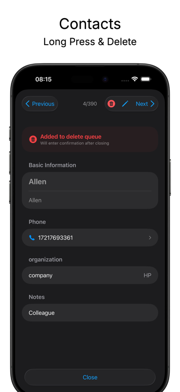
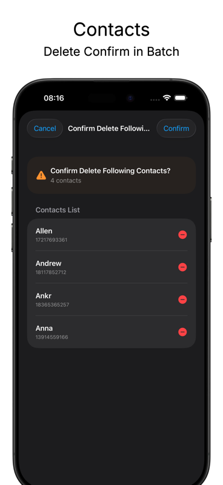
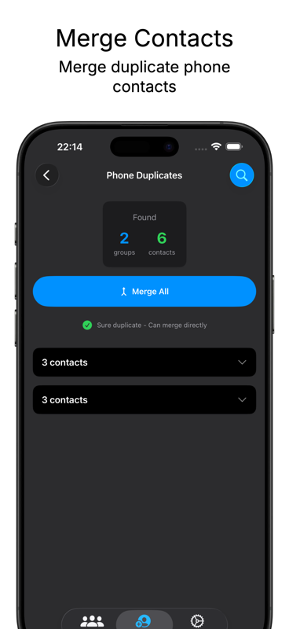
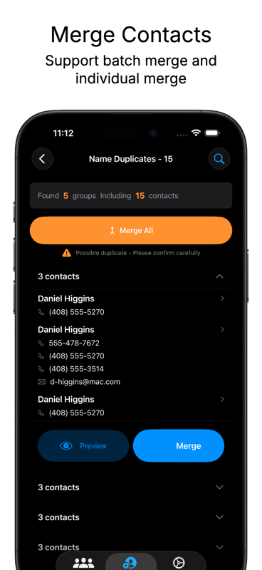
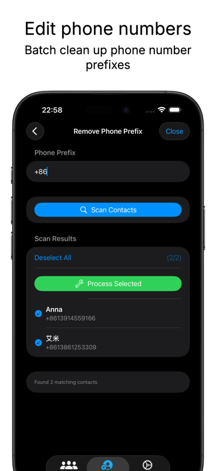
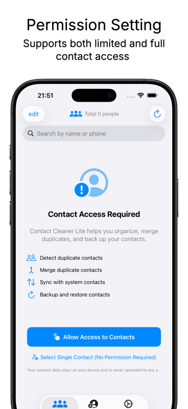

重复联系人检测
按电话号码精准检测重复联系人，也支持按姓名发现潜在重复项，合并前可逐一确认。
适合联系人很多、换机迁移、多账号同步后出现重复数据的用户。
按电话号码精准检测重复联系人，也支持按姓名发现潜在重复项，合并前可逐一确认。
自动保留更完整的信息，合并电话号码、邮箱、组织、备注等字段，减少手工整理成本。
快速找出空姓名、无电话号码、信息不完整的联系人，支持选择性删除或批量处理。
重要操作前可生成本地备份，保留备份历史，需要时随时恢复，避免误删焦虑。
支持从系统通讯录导入联系人，并将清理后的联系人同步回系统通讯录。
SwiftUI 原生体验，清晰的进度提示和确认弹窗，支持深色模式，复杂操作也不容易迷路。
先备份，再扫描，最后确认合并或删除。
授权访问系统通讯录，将联系人导入应用内进行本地分析和整理。
按电话、姓名等维度检测重复联系人，同时找出缺失关键信息的无效联系人。
合并或删除前查看详情，确认无误后批量处理，再同步回系统通讯录。
从联系人列表、重复检测到备份恢复，关键流程一目了然。





